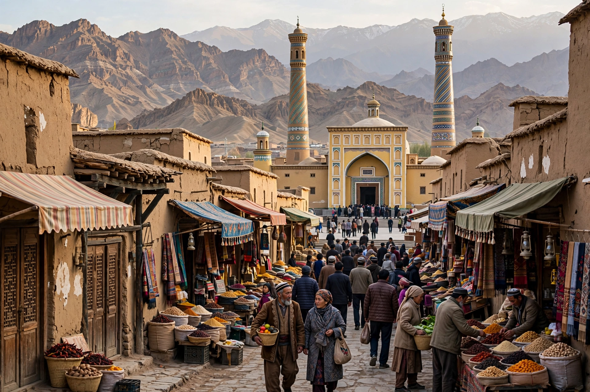

[Image placeholder: Kashgar's old city and the Id Kah Mosque]| Country | China (Xinjiang Uyghur Autonomous Region) |
|---|---|
| Population | About 700,000 (city area estimates) |
| Historic role | Oasis crossroads where the northern and southern Silk Roads split around the Taklamakan |
**Kashgar** (Uyghur: Qeshqer; Chinese: Kashi) is an oasis city in the far west of Xinjiang, China, near the borders with Kyrgyzstan, Tajikistan, Afghanistan and Pakistan. For over two thousand years it was the great crossroads of the Silk Road, where the routes around the Taklamakan Desert — north via Aksu and Turpan, south via Khotan — met the passes to India and Persia.
Kashgar was a prize of empires: Tang China, the Karakhanids, Mongols, Qing China (after the 1750s conquest), and briefly Yaqub Beg's Kashgaria (1860s–70s), when Britain and Russia spied on each other here in the 'Great Game' from consulates that still stand. Its old city of mud-brick lanes around the Id Kah Mosque (1442, China's largest) was largely demolished and rebuilt in 'earthquake-safe' replica style from 2009, a change criticised as erasing Uyghur heritage. The Sunday livestock market and bazaars remain famous. Kashgar is a hub of the China–Pakistan Economic Corridor, with the Karakoram Highway climbing from here to the Khunjerab Pass.
Since 2017 Kashgar has been at the centre of China's Xinjiang policies: heavy security, redevelopment and re-education camp controversies alongside new rail links (to Hotan and, planned, to Kyrgyzstan and Pakistan).